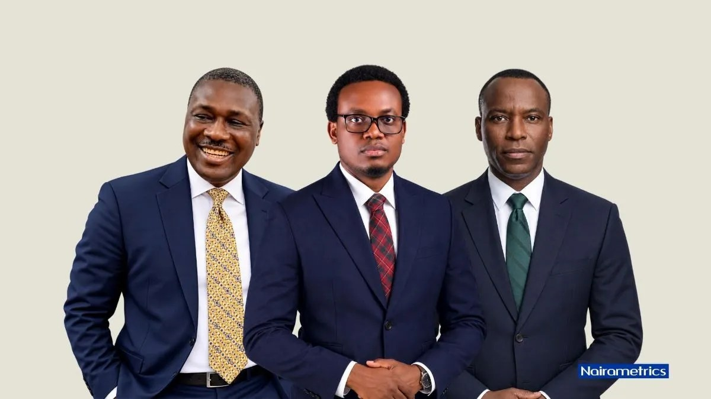

Meet the CEOs leading Nigeria’s seven listed oil and gas companies

Nigeria’s seven listed oil and gas companies have a combined market capitalisation of about N16.7 trillion, with executives steering businesses across exploration, production, refining, distribution and related services. Their leaders have varied career paths, from engineering and corporate law to banking and marketing, as indigenous firms take a larger role in the sector.
At Seplat Energy, Engr. Effiong Okon became chief executive on August 1, 2026, bringing more than 35 years of energy-sector experience, including senior roles at Shell. Seplat has reported an estimated 157 billion cubic feet of gas and 19 million barrels of oil in place at its Aku-01 exploration well. Adegbite Falade, a former Shell and Oando executive, has led Aradel Holdings since 2021. The company reported a 154.3% rise in profit before tax to N764.71 billion for the nine months to September 2026, alongside revenue of N3.95 trillion.
Oando Plc is led by Wale Tinubu, whose background is in law and petroleum law. He co-founded Ocean and Oil Limited in 1994; the group adopted the Oando name in 2003 and expanded across the oil and gas value chain. Wilfried Konde leads Total Nigeria Plc after a career in audit, finance and corporate affairs at TotalEnergies across several countries. The company, listed on the Nigerian Exchange in 1979, recorded pre-tax profit of N8.02 billion in the nine months to September 2026. Ikechukwu Emmanuel Oraekwuotu, whose career spans banking and financial services, leads Conoil Plc. He joined its board in 2014 and later assumed its acting leadership role.
At Eterna Plc, Jude Nwaulune became managing director and chief executive in May 2026 after roles in retail operations and logistics. The company reported revenue of N365.56 billion for the nine months to September 2026, up from N212.84 billion in the same period a year earlier. Henry Alakhume took over as acting group managing director of Japaul Gold & Ventures in February 2026, following Akinloye Daniel Oladapo’s resignation. Alakhume had been the company’s chief operating officer. Japaul reported profit before tax of N1.50 billion for the nine months to September 2026, a 202.3% increase on the corresponding period of 2025.
Source: Nairametrics